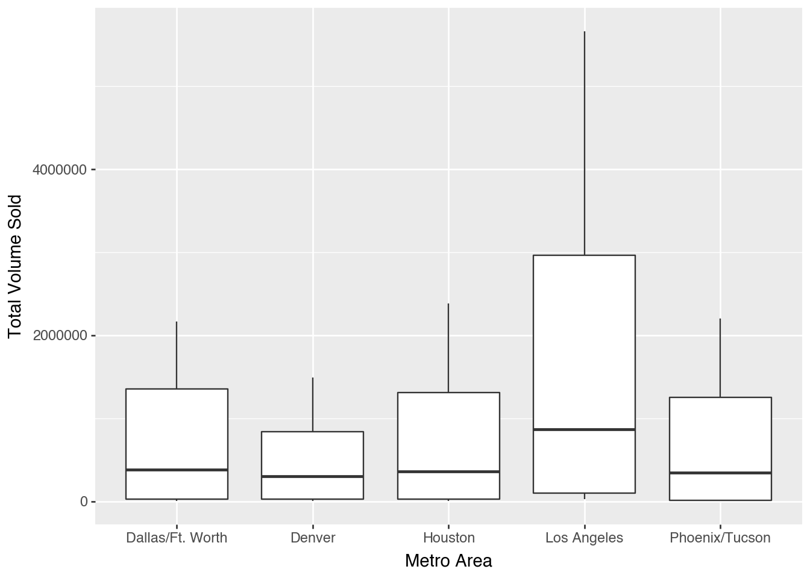
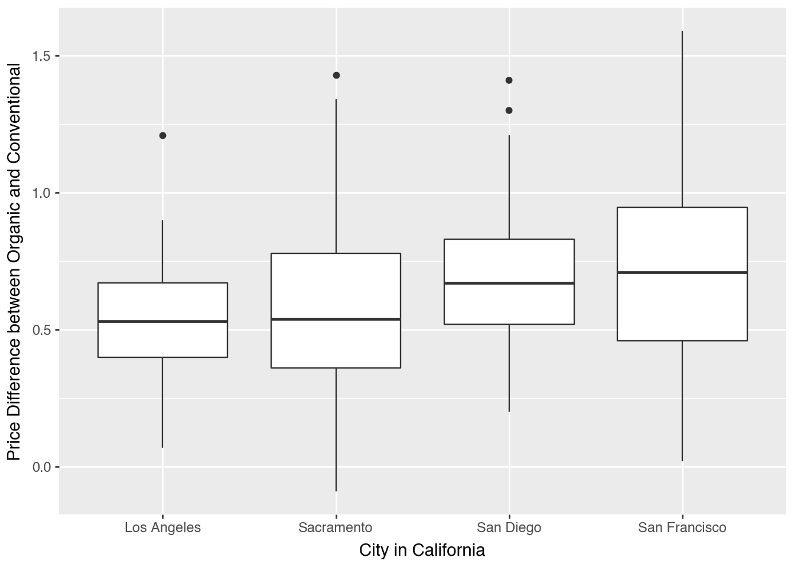
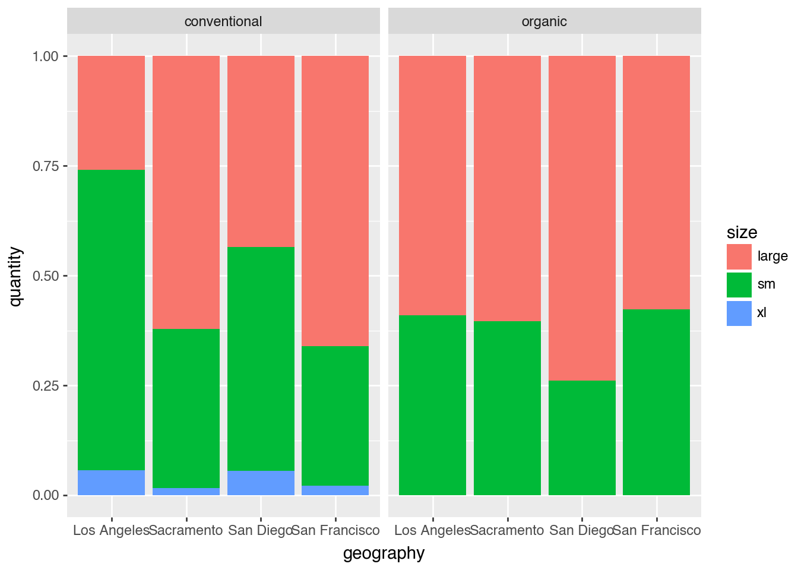
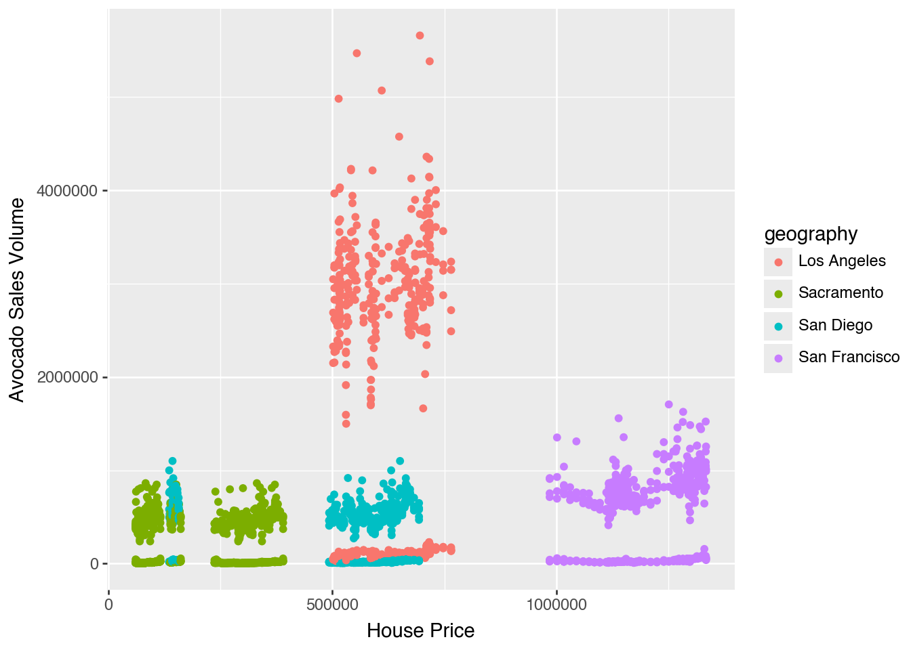
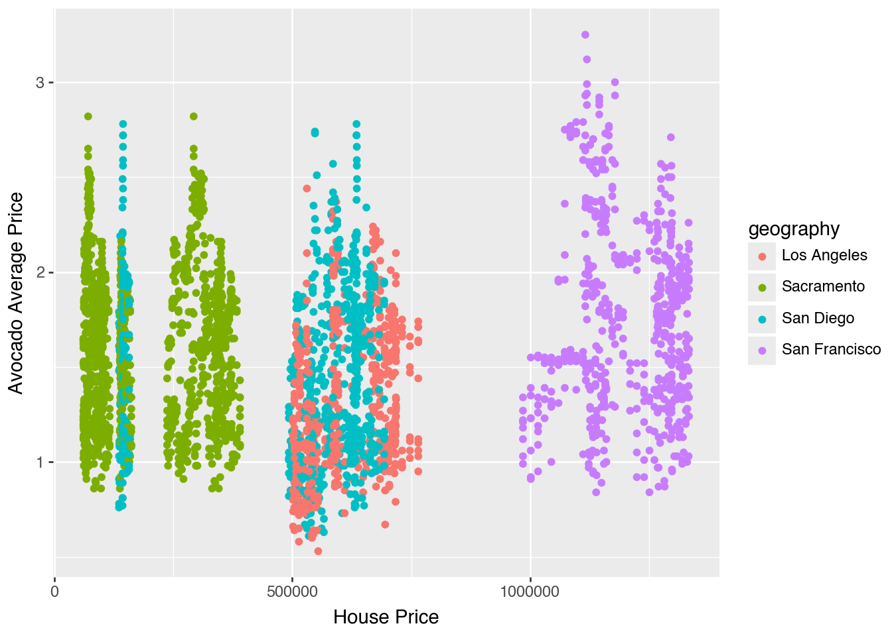

import pandas as pdLab 2
0: Import of Data, Calling Packages
avocados = pd.read_csv("~/Desktop/GSB 544/Labs/Lab_2/Data/avocado-updated-2020.csv", sep=',')1: Describing the Dataset
avocados.info()<class 'pandas.core.frame.DataFrame'>
RangeIndex: 33045 entries, 0 to 33044
Data columns (total 13 columns):
# Column Non-Null Count Dtype
--- ------ -------------- -----
0 date 33045 non-null object
1 average_price 33045 non-null float64
2 total_volume 33045 non-null float64
3 4046 33045 non-null float64
4 4225 33045 non-null float64
5 4770 33045 non-null float64
6 total_bags 33045 non-null float64
7 small_bags 33045 non-null float64
8 large_bags 33045 non-null float64
9 xlarge_bags 33045 non-null float64
10 type 33045 non-null object
11 year 33045 non-null int64
12 geography 33045 non-null object
dtypes: float64(9), int64(1), object(3)
memory usage: 3.3+ MBThe avocados dataframe contains 13 variables containing information about avocado prices, total volume, and sales quantities for avocados between 2015 and 2020. Information about sales quantity of the avocado includes the type (conventional vs. organic), the geography (the region/area where avocados are being considered), and data on the size/sell type of avocados. This includes small/medium avocados, large avocados, xl avocados, and bags of avocados of each type.
2: Data Cleaning
avocado_cleaned=avocados[["date", "average_price", "total_volume", "total_bags", "small_bags", "large_bags", "xlarge_bags", "type", "year","geography"]]avocado_cleaned["sm"]=avocados["4046"]
avocado_cleaned["large"]=avocados["4225"]
avocado_cleaned["xl"]=avocados["4770"]/var/folders/42/_r31h9t105bfw6ff7pgp8_7r0000gn/T/ipykernel_7908/1286719532.py:1: SettingWithCopyWarning:
A value is trying to be set on a copy of a slice from a DataFrame.
Try using .loc[row_indexer,col_indexer] = value instead
See the caveats in the documentation: https://pandas.pydata.org/pandas-docs/stable/user_guide/indexing.html#returning-a-view-versus-a-copy
/var/folders/42/_r31h9t105bfw6ff7pgp8_7r0000gn/T/ipykernel_7908/1286719532.py:2: SettingWithCopyWarning:
A value is trying to be set on a copy of a slice from a DataFrame.
Try using .loc[row_indexer,col_indexer] = value instead
See the caveats in the documentation: https://pandas.pydata.org/pandas-docs/stable/user_guide/indexing.html#returning-a-view-versus-a-copy#avocados["geography"].value_counts()from numpy import isin
states=["California", "South Carolina", "New York"]
us=["Total U.S."]
regions=["Midsouth", "Northeast","Southeast", "South Central", "West", "West Tex/New Mexico", "Northern New England", "Great Lakes", "Plains"]
avocado_cleaned["geo_type"] = "city"
is_state = isin(avocado_cleaned["geography"], states)
is_us = isin(avocado_cleaned["geography"], us)
is_region = isin(avocado_cleaned["geography"],regions)
avocado_cleaned.loc[is_state, "geo_type"] = "state"
avocado_cleaned.loc[is_us, "geo_type"] = "U.S."
avocado_cleaned.loc[is_region, "geo_type"] = "region"3: Which major geographical region sold the most total organic, small Hass avocados in 2017?
avo_small=avocado_cleaned[(avocado_cleaned["type"]=="organic") & (avocado_cleaned["geo_type"]=="region") & (avocado_cleaned["year"]==2017)]
geo_sm_sold=avo_small[["geography", "sm"]].groupby("geography").sum()
geo_sm_sold.sort_values(by = ["sm"], ascending=False)| sm | |
|---|---|
| geography | |
| West | 1870206.29 |
| South Central | 1717104.19 |
| Northeast | 925832.36 |
| Southeast | 285124.34 |
| Great Lakes | 202487.68 |
| Midsouth | 186395.50 |
| Plains | 168583.40 |
| West Tex/New Mexico | 110910.95 |
| Northern New England | 1249.48 |
The West region sold the most total organic, small Hass avocados in 2017.
4: Which month is the highest average volume of avocado sales?
avo_monthly=avocado_cleaned
avo_monthly["month"]=avocado_cleaned["date"].str[5:7]
avo_monthly[["total_volume", "month"]].groupby("month").mean().sort_values(by = ["total_volume"], ascending=False)| total_volume | |
|---|---|
| month | |
| 05 | 1.123632e+06 |
| 02 | 1.095374e+06 |
| 06 | 1.051247e+06 |
| 04 | 1.016582e+06 |
| 03 | 9.957150e+05 |
| 01 | 9.853122e+05 |
| 07 | 9.832681e+05 |
| 08 | 9.499249e+05 |
| 09 | 9.064773e+05 |
| 10 | 8.446863e+05 |
| 11 | 8.223470e+05 |
| 12 | 8.076695e+05 |
May has the highest average volume of avocado sales.
5: Which metro area geographical regions sold the most total avocados? Plot side-by-side box-plots of the total volume for only the five metro geographical regions with the highest averages for the total_volume variable.
avo_regions=avocado_cleaned[avocado_cleaned["geo_type"]=="city"]
region_volume=avo_regions[["total_volume", "geography"]].groupby("geography").mean().sort_values(by = ["total_volume"], ascending=False).reset_index().loc[0:4,:]
region_volume| geography | total_volume | |
|---|---|---|
| 0 | Los Angeles | 1.567566e+06 |
| 1 | Dallas/Ft. Worth | 7.127519e+05 |
| 2 | Houston | 6.876533e+05 |
| 3 | Phoenix/Tucson | 6.250383e+05 |
| 4 | Denver | 4.541332e+05 |
is_most=isin(avocado_cleaned["geography"], region_volume["geography"])
vol_regions=avocado_cleaned.loc[is_most]import plotnine as p9
(p9.ggplot(vol_regions,
p9.aes(
x = "geography",
y = "total_volume"
))
+ p9.geom_boxplot()
+ p9.labs(
x="Metro Area",
y="Total Volume Sold"
)
)
6: From your cleaned data set, create a data set with only these California regions and answer the following questions about these California regions only.
is_california=isin(avocado_cleaned["geography"], ["San Francisco", "Los Angeles", "Sacramento", "San Diego"])
cali_regions=avocado_cleaned.loc[is_california]7: In which California regions is the price of organic versus conventional avocados most different? Support your answer with a few summary statistics AND a visualization.
cali_organic=cali_regions[cali_regions["type"]=="organic"]
cali_organic["average_price_org"]=cali_organic["average_price"]
cali_organic=cali_organic[["geography", "date", "average_price_org", "year"]]
cali_organic
cali_conv=cali_regions[cali_regions["type"]=="conventional"]
cali_conv["average_price_conv"]=cali_conv["average_price"]
cali_conv=cali_conv[["geography", "date", "average_price_conv", "year"]]
cali_both = cali_organic.merge(cali_conv, on=["date", "geography", "year"], how="inner")
cali_both["price_diff"]=cali_both["average_price_org"]-cali_both["average_price_conv"]
cali_both[["geography", "price_diff"]].groupby("geography").mean().sort_values(by = ["price_diff"], ascending=False)/var/folders/42/_r31h9t105bfw6ff7pgp8_7r0000gn/T/ipykernel_7908/2801258495.py:2: SettingWithCopyWarning:
A value is trying to be set on a copy of a slice from a DataFrame.
Try using .loc[row_indexer,col_indexer] = value instead
See the caveats in the documentation: https://pandas.pydata.org/pandas-docs/stable/user_guide/indexing.html#returning-a-view-versus-a-copy
/var/folders/42/_r31h9t105bfw6ff7pgp8_7r0000gn/T/ipykernel_7908/2801258495.py:7: SettingWithCopyWarning:
A value is trying to be set on a copy of a slice from a DataFrame.
Try using .loc[row_indexer,col_indexer] = value instead
See the caveats in the documentation: https://pandas.pydata.org/pandas-docs/stable/user_guide/indexing.html#returning-a-view-versus-a-copy| price_diff | |
|---|---|
| geography | |
| San Francisco | 0.718954 |
| San Diego | 0.684510 |
| Sacramento | 0.578497 |
| Los Angeles | 0.527778 |
San Francisco had the highest price difference between organic and conventional avocados, and Los Angeles had the lowest price difference between organic and conventional avocados.
(p9.ggplot(cali_both,
p9.aes(
x = "geography",
y = "price_diff",
fill="year"
))
+ p9.geom_boxplot()
+ p9.labs(
x="City in California",
y="Price Difference between Organic and Conventional"
)
)
8: The following plot shows, for all four California regions, the proportion of the average Hass avocado sales that are small, large, or extra large; conventional vs. organic. Recreate the plot; you do not have to replicate the exact finishing touches - e.g., color, theme - but your plot should resemble the content of this plot.
cali_wide=cali_regions[["geography", "sm", "large", "xl", "type"]]
cali_long = cali_wide.melt(id_vars=["geography", "type"], var_name="size", value_name="quantity")(p9.ggplot(cali_long,
p9.aes(
x = "geography",
y= "quantity",
fill="size"
))
+ p9.geom_bar(stat="identity", position="fill")
+ p9.facet_wrap("type")
)
Outside Data Questions
data found at: https://www.zillow.com/research/data/
houses = pd.read_csv("~/Desktop/GSB 544/Labs/Lab_2/Data/City_zhvi_uc_sfrcondo_tier_0.33_0.67_sm_sa_month.csv", sep=',')
cities=isin(houses["RegionName"], ["San Francisco", "San Diego", "Los Angeles", "Sacramento"])
ca_houses=houses.loc[cities]
ca_houses.head(6)| RegionID | SizeRank | RegionName | RegionType | StateName | State | Metro | CountyName | 2000-01-31 | 2000-02-29 | ... | 2024-11-30 | 2024-12-31 | 2025-01-31 | 2025-02-28 | 2025-03-31 | 2025-04-30 | 2025-05-31 | 2025-06-30 | 2025-07-31 | 2025-08-31 | |
|---|---|---|---|---|---|---|---|---|---|---|---|---|---|---|---|---|---|---|---|---|---|
| 1 | 12447 | 1 | Los Angeles | city | CA | CA | Los Angeles-Long Beach-Anaheim, CA | Los Angeles County | 220091.989964 | 220425.233197 | ... | 9.661597e+05 | 9.693400e+05 | 9.672548e+05 | 9.615709e+05 | 9.527424e+05 | 9.462337e+05 | 9.401262e+05 | 9.345571e+05 | 9.314540e+05 | 9.306223e+05 |
| 8 | 54296 | 8 | San Diego | city | CA | CA | San Diego-Chula Vista-Carlsbad, CA | San Diego County | 219248.787108 | 220257.152521 | ... | 1.019580e+06 | 1.018297e+06 | 1.017164e+06 | 1.016324e+06 | 1.014030e+06 | 1.010062e+06 | 1.003287e+06 | 9.953445e+05 | 9.884280e+05 | 9.827333e+05 |
| 17 | 20330 | 17 | San Francisco | city | CA | CA | San Francisco-Oakland-Berkeley, CA | San Francisco County | 405811.453594 | 407879.970652 | ... | 1.254303e+06 | 1.257052e+06 | 1.259433e+06 | 1.260005e+06 | 1.258497e+06 | 1.256930e+06 | 1.252606e+06 | 1.246476e+06 | 1.241888e+06 | 1.240382e+06 |
| 28 | 20288 | 28 | Sacramento | city | CA | CA | Sacramento-Roseville-Folsom, CA | Sacramento County | 123200.345795 | 123535.301222 | ... | 4.902773e+05 | 4.905897e+05 | 4.904015e+05 | 4.892982e+05 | 4.871909e+05 | 4.853070e+05 | 4.832061e+05 | 4.808936e+05 | 4.782805e+05 | 4.759521e+05 |
| 6745 | 29290 | 7031 | San Diego | city | TX | TX | Alice, TX | Duval County | NaN | NaN | ... | 9.471126e+04 | 9.479769e+04 | 9.548883e+04 | 9.627123e+04 | 9.621335e+04 | 9.428680e+04 | 9.204047e+04 | 9.015940e+04 | 8.873794e+04 | 8.735841e+04 |
| 16115 | 54259 | 18197 | Sacramento | city | KY | KY | Owensboro, KY | McLean County | NaN | NaN | ... | 1.322283e+05 | 1.340499e+05 | 1.359700e+05 | 1.379493e+05 | 1.393536e+05 | 1.404515e+05 | 1.402835e+05 | 1.384222e+05 | 1.354880e+05 | 1.326204e+05 |
6 rows × 316 columns
houses_clean=ca_houses.drop(columns=["RegionID", "SizeRank", "RegionType", "StateName", "State", "Metro", "CountyName"])
houses_long=houses_clean.melt(id_vars=["RegionName"], var_name="date", value_name="price")
houses_long["year"]=houses_long["date"].str[0:4].astype(int)
houses_long["month"]=houses_long["date"].str[5:7]
houses_long["geography"]=houses_long["RegionName"]
houses_long.head(6)| RegionName | date | price | year | month | geography | |
|---|---|---|---|---|---|---|
| 0 | Los Angeles | 2000-01-31 | 220091.989964 | 2000 | 01 | Los Angeles |
| 1 | San Diego | 2000-01-31 | 219248.787108 | 2000 | 01 | San Diego |
| 2 | San Francisco | 2000-01-31 | 405811.453594 | 2000 | 01 | San Francisco |
| 3 | Sacramento | 2000-01-31 | 123200.345795 | 2000 | 01 | Sacramento |
| 4 | San Diego | 2000-01-31 | NaN | 2000 | 01 | San Diego |
| 5 | Sacramento | 2000-01-31 | NaN | 2000 | 01 | Sacramento |
avo_houses=houses_long.merge(cali_regions, on=["month", "geography", "year"], how="inner")
avo_houses.head(6)| RegionName | date_x | price | year | month | geography | date_y | average_price | total_volume | total_bags | small_bags | large_bags | xlarge_bags | type | sm | large | xl | geo_type | |
|---|---|---|---|---|---|---|---|---|---|---|---|---|---|---|---|---|---|---|
| 0 | Los Angeles | 2015-01-31 | 515125.421594 | 2015 | 01 | Los Angeles | 2015-01-04 | 0.85 | 2682159.95 | 255504.05 | 215571.80 | 36981.72 | 2950.53 | conventional | 1837999.65 | 524430.47 | 64225.78 | city |
| 1 | Los Angeles | 2015-01-31 | 515125.421594 | 2015 | 01 | Los Angeles | 2015-01-04 | 1.25 | 54495.54 | 5050.63 | 5050.63 | 0.00 | 0.00 | organic | 47721.51 | 1723.40 | 0.00 | city |
| 2 | Los Angeles | 2015-01-31 | 515125.421594 | 2015 | 01 | Los Angeles | 2015-01-11 | 0.85 | 2713699.60 | 251246.65 | 222971.68 | 25111.74 | 3163.23 | conventional | 1786326.65 | 617233.39 | 58892.91 | city |
| 3 | Los Angeles | 2015-01-31 | 515125.421594 | 2015 | 01 | Los Angeles | 2015-01-11 | 1.08 | 60232.63 | 6081.88 | 6081.88 | 0.00 | 0.00 | organic | 52087.31 | 2063.44 | 0.00 | city |
| 4 | Los Angeles | 2015-01-31 | 515125.421594 | 2015 | 01 | Los Angeles | 2015-01-18 | 0.89 | 2800679.50 | 290195.16 | 260857.96 | 26671.18 | 2666.02 | conventional | 1925013.31 | 526106.80 | 59364.23 | city |
| 5 | Los Angeles | 2015-01-31 | 515125.421594 | 2015 | 01 | Los Angeles | 2015-01-18 | 1.29 | 43649.12 | 8541.34 | 8541.34 | 0.00 | 0.00 | organic | 33738.87 | 1368.91 | 0.00 | city |
(p9.ggplot(avo_houses,
p9.aes(
x = "price",
y= "total_volume",
color="geography"
))
+ p9.geom_point()
+ p9.labs(
x="House Price",
y="Avocado Sales Volume"
)
)/opt/anaconda3/lib/python3.13/site-packages/plotnine/layer.py:372: PlotnineWarning: geom_point : Removed 840 rows containing missing values.
In San Diego, San Francisco, and Sacramento avocado sales volume is pretty similar, but in Los Angeles the avocado sales volume is much higher. Los Angeles also is in the middle range for house prices, so it is unclear that avocado sales prices is correlated with home prices.
(p9.ggplot(avo_houses,
p9.aes(
x = "price",
y= "average_price",
color="geography"
))
+ p9.geom_point()
+ p9.labs(
x="House Price",
y="Avocado Average Price"
)
)/opt/anaconda3/lib/python3.13/site-packages/plotnine/layer.py:372: PlotnineWarning: geom_point : Removed 840 rows containing missing values.
Additionally, the avocado average price is pretty similar between the regions, and there is little correltaion between the house price and avocado average price.